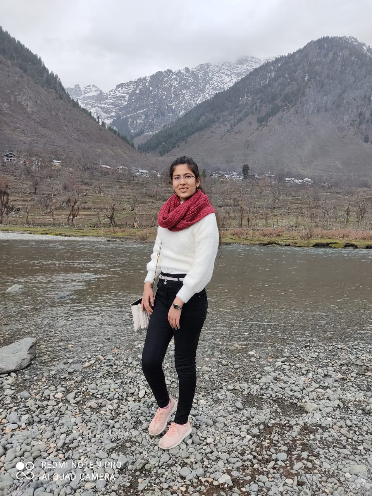
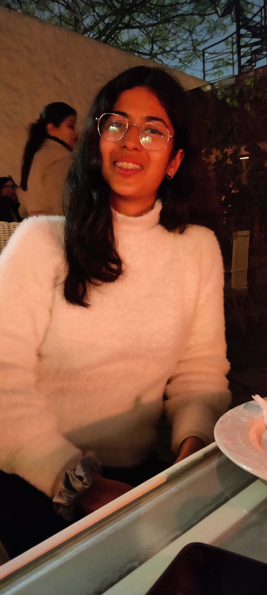
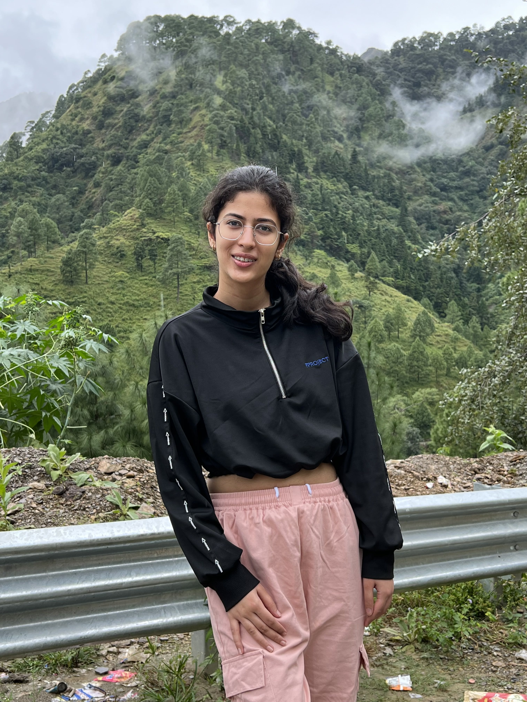

About Myself
I love to expore new skills and have tried various things since my childhood . I completed my schooling from St. Mary's Convent High School , Kanpur . I secured 98% in my 10th standard and 99.25% in 12th standard .
I have also indulged in a lot of co-curricular activities in my school and college :
I have completed an advanced abacus course from BRAINOBRAIN .
I am a core team member of the Entrepreneurship Cell of IIT Ropar .
I am also the Media and Outreach Co-ordinator of D'Cypher , the Dance club of IIT Ropar .
I love to travel and make new friends :


